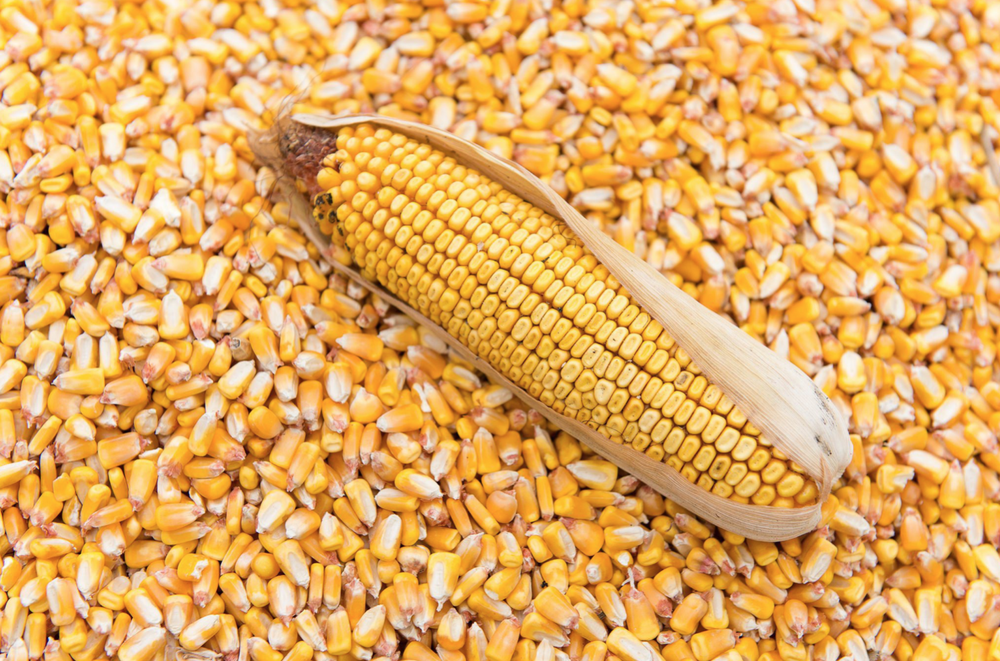
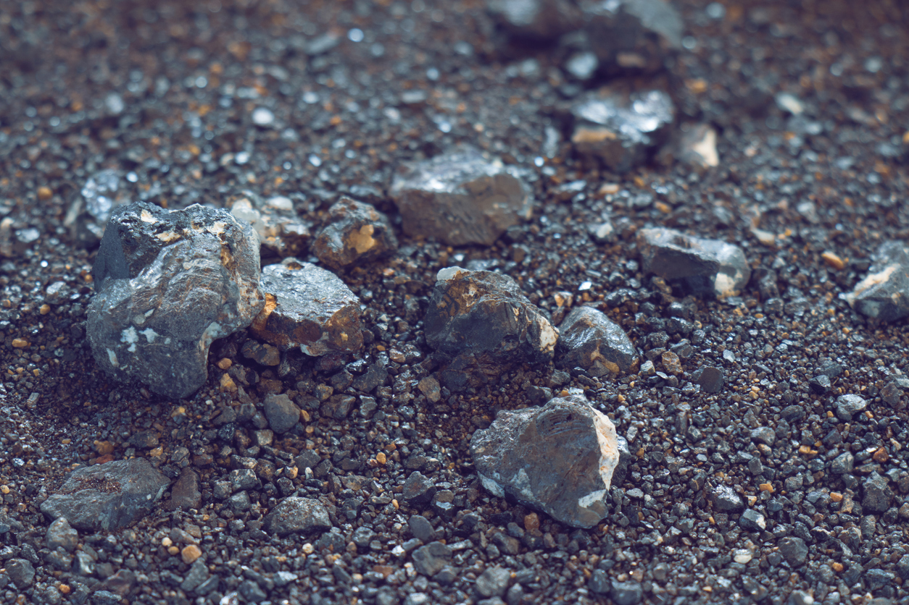
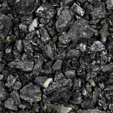
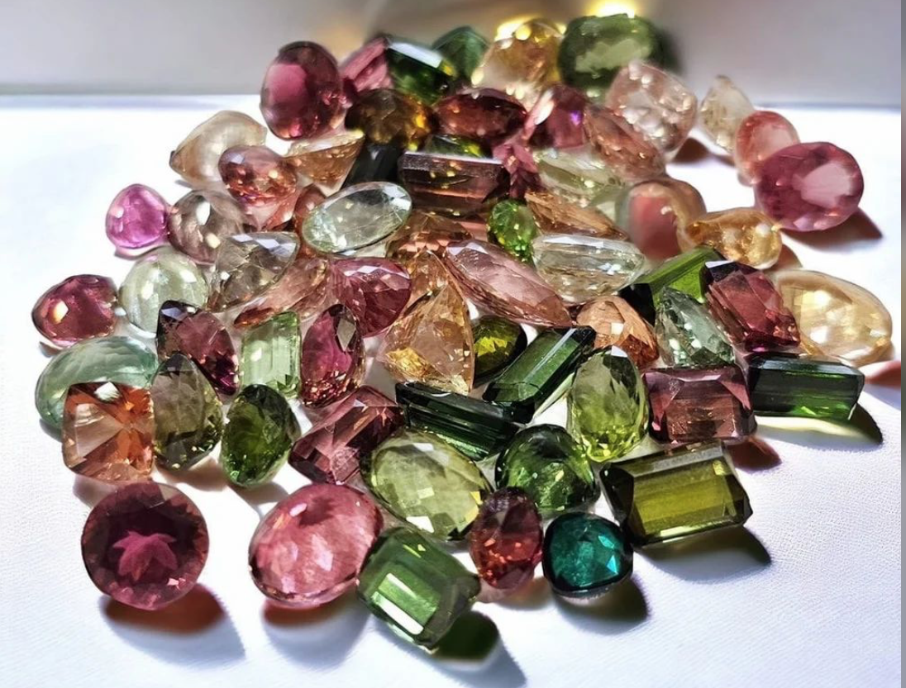
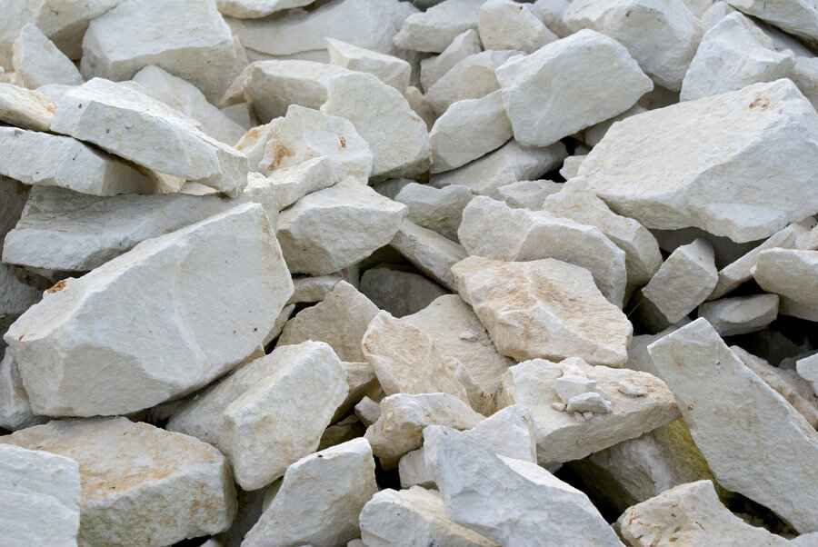
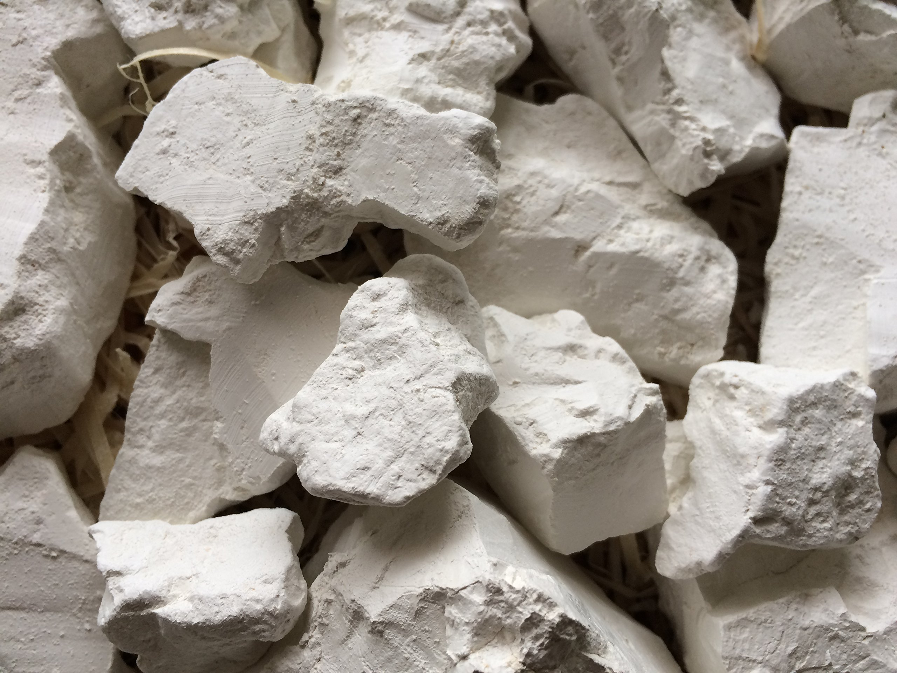

FLAGSHIP CROP
Irish Potatoes
Nigeria's largest producer. Plateau State's cool highlands yield high-quality tubers supplying markets across the nation and growing export demand.
COMMODITIES & RESOURCES
From Irish potatoes and strawberries to cassiterite and columbite — Plateau State's near-temperate climate and mineral-rich terrain produce commodities found nowhere else in Nigeria's tropics.
AGRICULTURAL COMMODITIES
At 1,200m above sea level, Plateau State's highland climate produces premium-quality crops unavailable in Nigeria's tropical lowlands. PLACOM organizes, certifies, and markets these unique agricultural assets.
Nigeria's largest producer. Plateau State's cool highlands yield high-quality tubers supplying markets across the nation and growing export demand.

A national food security crop produced in large quantities, feeding domestic processing industries and fresh markets across Nigeria.

One of Nigeria's very few strawberry-producing regions. High value, export-ready with strong demand from hospitality and food processing sectors.

Cabbage, carrots, onions, spinach, peas, and green beans grown in Plateau's cool climate command premium prices in southern Nigerian markets.

Soybean, sorghum, millet, and maize — supporting domestic food security and feeding livestock value chains across Northern Nigeria.

Unique highland fruits — plums, guavas, pears — alongside pepper varieties and spices that thrive in Plateau's distinctive microclimate.

A major staple crop supporting food security, livestock production and industrial processing across Plateau State and beyond.

Produced across various farming communities and increasingly integrated into organized market systems and processing value chains.

A high-demand vegetable cultivated extensively in Plateau State's temperate farming zones, supplying markets across Nigeria.

Commercially cultivated for domestic consumption and food processing markets, benefiting from Plateau's cool highland climate.
An important commodity supporting food markets and commercial agricultural trade across Northern Nigeria and beyond.

A strategic industrial crop utilized in food processing, livestock feed production and export markets — high potential for value addition.

A high-value agricultural commodity with strong and growing export and processing potential in global spice and pharmaceutical markets.

A major Nigerian export crop with high demand in Asian markets for oil, food manufacturing and cosmetic applications.

An important commodity for food processing, edible oil production and agro-industrial development with strong domestic and export demand.

Nigeria's ancient nutritional grain — increasingly sought by health-conscious markets globally due to its high nutritional value and gluten-free properties.
LIVESTOCK & AGRIBUSINESS
Plateau State also supports livestock and agribusiness value chains that contribute significantly to food security, rural income, and industrial development across the state. PLACOM works to strengthen these value chains through market coordination, supply chain development and investment partnerships.
Milk and dairy commodity value chains supporting local food processing and nutrition markets.
Chicken and egg production contributing to food security, local employment and growing agro-industrial demand.
Beef, pork and small ruminant value chains with structured market linkages and processing potential.
Animal feed manufacturing leveraging Plateau's grain surplus to reduce production costs and improve livestock productivity.
Commercial flower, ornamental and specialty crop production supported by Plateau's temperate highlands.
SOLID MINERALS
Plateau State sits on one of West Africa's richest mineral belts. PLACOM supports artisanal miners and cooperatives with structured aggregation, quality assurance, and market linkage for the state's mineral resources.

Plateau State was once the world's leading tin producer. Rich cassiterite deposits remain and are being revitalized through structured mining facilitation.

Niobium-bearing ore essential for high-strength steel alloys and electronics. Plateau's columbite deposits position Nigeria in the global critical minerals supply chain.

Amethyst, topaz, aquamarine, tourmaline, and other precious stones found in Plateau State command premium prices in international gem markets.

Large limestone deposits support cement manufacturing and construction industries, with growing demand from Nigeria's infrastructure development push.

High-quality kaolin deposits used in ceramics, pharmaceuticals, paper, and paint manufacturing. Significant export potential to regional industries.

Raw materials for Nigeria's glass and ceramics industries, with growing demand from domestic manufacturing and construction sectors.

A critical mineral used in electronics manufacturing, capacitors, and high-tech applications — increasingly valued in global markets.

A tungsten-bearing mineral used in the manufacture of hard metals, tool steel, and high-performance alloys for industrial applications.

Used in ceramics, refractory materials, and nuclear applications — Plateau State holds notable deposits with strong export potential.

An abundant construction and architectural material with high demand in Nigeria's booming infrastructure and real estate sectors.
PLACOM'S ROLE
PLACOM certifies commodities to national and international standards, unlocking access to premium markets and export channels.
Certified warehouses consolidate small farmer and miner outputs into commercially viable volumes for market and export.
Connecting Plateau's producers to commodity exchanges, international buyers, and export markets through PLACOM's trade network.
Market intervention mechanisms and warehouse receipt financing protect farmers and miners from seasonal price volatility.
Whether you're a buyer, trader, exporter, or investor — connect with PLACOM to access Plateau State's premium commodity base.
Get In Touch →